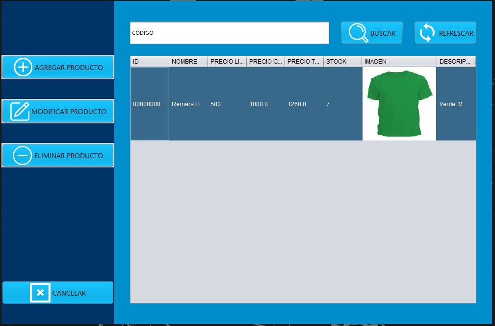
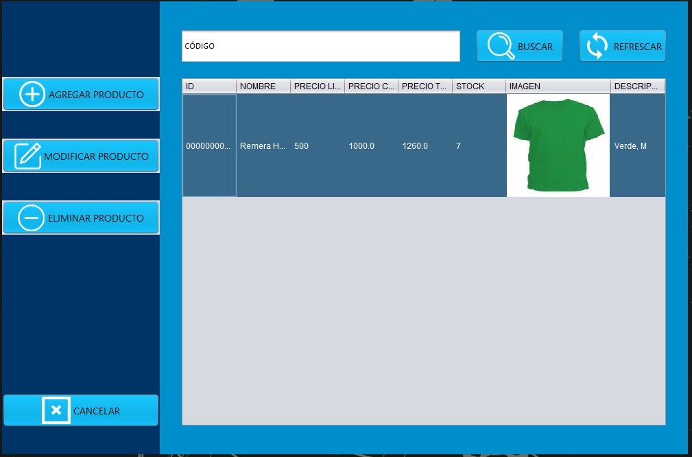
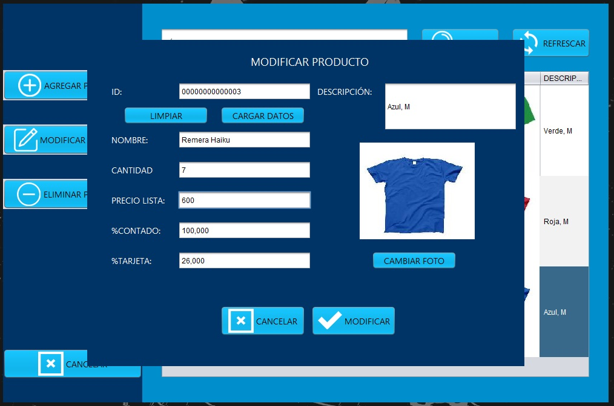
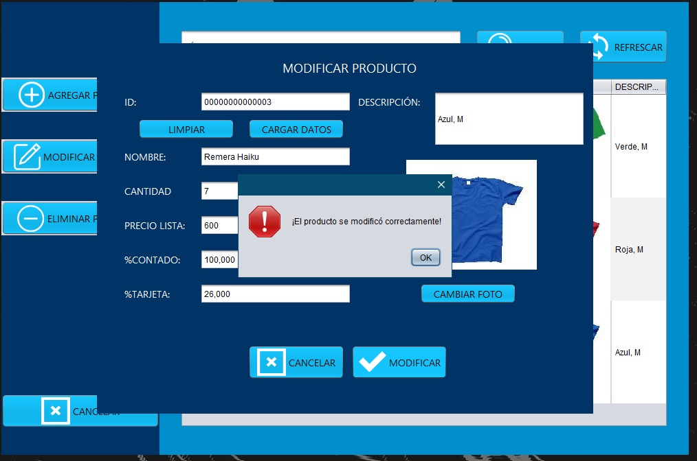
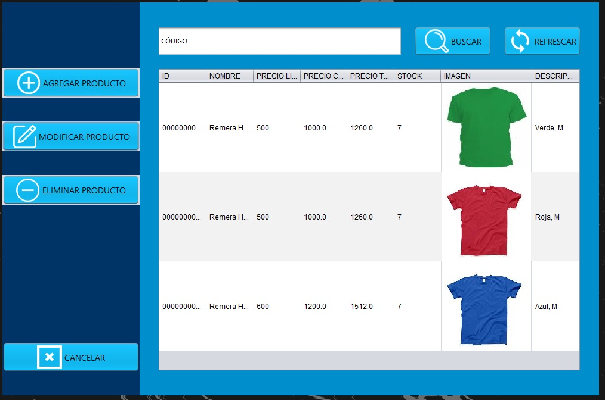
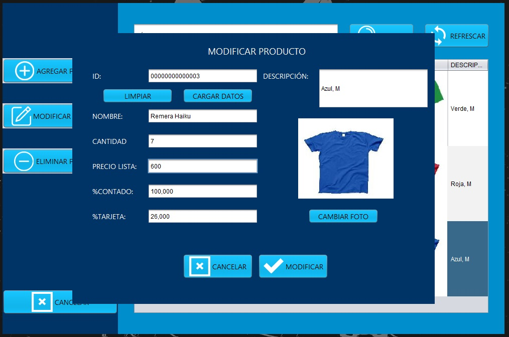
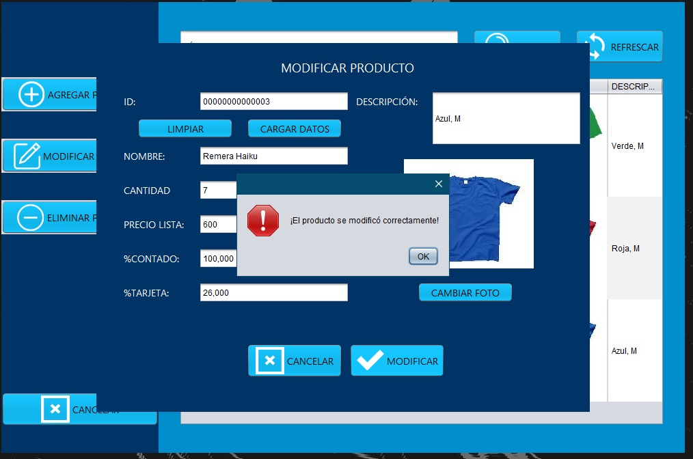
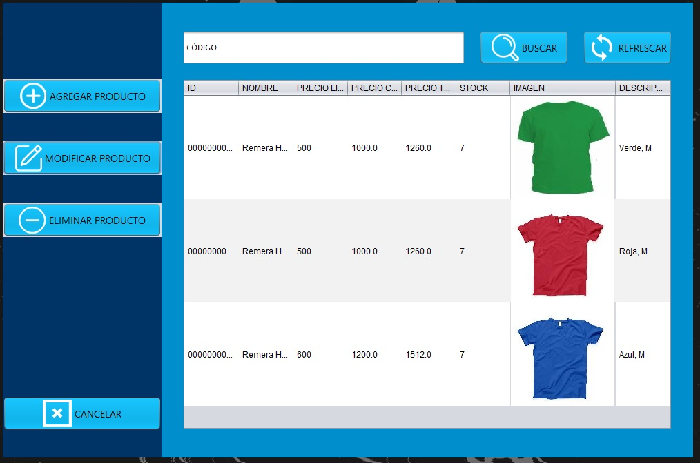

Geome7ric v1.1
Un sofware para tu comercio
Geome7ric es un programa para poder llevar el control del stock de tu comercio, así como registro de venta, clientela y proveduría. Ya no más utilizar lapiz y papel para cerrar el día, o siquiera tener registro alguno de las ventas o el stock restante. Es cómodo, fácil de usar e intuitivo, lo que lo convierte en una concreta opción frente a programas como Tango, programas más complejos que requieren de cursos y horas invertidas para comprender como usarlo.
Le permitirá registrar los ingresos del día a día, agilizar las ventas sin tener que memorizar o buscar un precio en un papel y poder estar frente a una computadora y decidir en que consistirá su próxima compra al proveedor sin necesidad de ir a observar el depósito o recontar elementos de su comercio.
Para saber cómo funciona, puedes ver el siguiente video o continuar con el contenido de ésta página. No olvides contactarme ante cualquier duda (tal vez el icono flotante de WhatsApp sea lo más cómodo para ti).
1. Productos
En primer lugar, nos centraremos en esta vista, la cuál sin ningun producto cargado aún, luce de la siguiente manera.
1.1 Agregar producto
El programa está pensado para productos con códigos de barra1 para poder establecer numéros únicos e identificatorios para cada uno y poder obtenerlos con una lectora de código de barras. En la secuencia de imagenes, agregaremos como ejemplo, una remera verde marca Haiku talle M.1.- Si tus productos no tienen códigos de barra, ¡no te preocupes!, existen impresoras específicas y muy prácticas que se encargan de proveer peganitas de códigos de barra para tus productos
1.2 Modificar producto
El procedimiento consta de seleccionar el producto a modificar, clickear en el botón 'Modificar producto' y editar los campos que necesitamos ante cambios de precios, porcentajes, errores de tipeo a la hora de cargar el producto, etc. Para el ejemplo, vamos a cambiar el valor de la remera azul de $500 a $600. 

 





1.2 Eliminar producto
Si ya no tiene determinados productos y sabe que no los trabajarás más, basta con seleccionar el producto a modificar y clickear en el botón 'Eliminar producto' para quitarlo de tu sistema. En el ejemplo, eliminamos la remera azul.
Por último, la barra y su botón para buscar dentro de tus productos, ya sea por código o nombre.